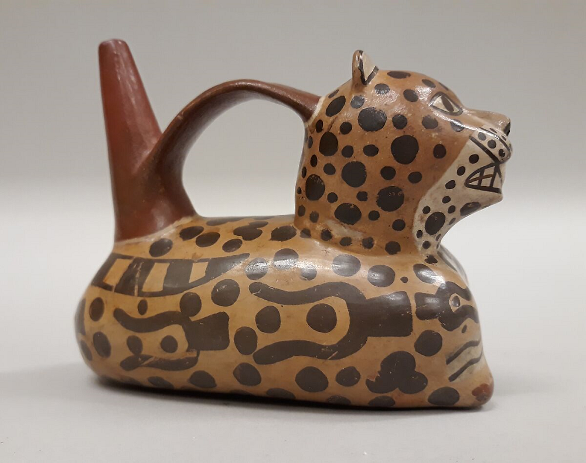

Huari Whistling Bottles
Note 019
Home > Blog A Musician's Log > Note 019
Aerodynamics Engineered in Clay
The Huari, or Wari, culture developed in the central Andes during the Middle Horizon, roughly between the sixth and tenth centuries CE. Centered in the highlands of present-day Ayacucho, in Peru, Huari influence extended across large parts of the central Andes through urban planning, road systems, administrative practices, textiles, and ceramic production. Their material culture belongs to a world of expanding political authority, regional exchange, and highly developed craft technologies.
Among those ceramic technologies, the so-called whistling bottle occupies a peculiar place. It is often displayed as sculptural pottery: twin chambers joined by a bridge, one chamber crowned by a modeled human, animal, or hybrid figure. Museum labels tend to foreground iconography, because that is what the eye encounters first. But the acoustic operation of these vessels depends on something less visible: internal architecture.
A Huari whistling bottle is not only an image-bearing ceramic object. It is a sound-producing device built from clay, air, water, and pressure.
Internal Mechanism
A double-chambered whistling bottle consists of hollow ceramic chambers connected by a narrow passage. In many examples, one chamber incorporates a duct whistle: an internal airway that directs air across a sharp edge. When the vessel is partially filled and tilted, liquid moves from one chamber to the other. As liquid displaces air, pressure changes inside the vessel and forces an air stream through the duct. That stream strikes the edge, oscillates, and produces tone.
The mechanism is aerodynamic rather than decorative. Organologically, such objects belong among duct vessel flutes, more precisely within the Hornbostel-Sachs area of flutes with internal duct, especially vessel flutes with duct. But that classification only describes the sound-producing element. It does not fully capture the hydraulic trigger.
There may be no embouchure, no lips, and no direct breath. The performer manipulates gravity, while air becomes a consequence of liquid exchange.
Pressure and Pitch
The pitch of a whistling bottle depends primarily on the geometry of the duct, the aperture, and the volume of the resonating cavity. Unlike open flutes, these vessels generally do not use finger holes to alter the effective length of an air column. Their tone is usually fixed, or only minimally variable.
Some bottles produce a steady whistle. Others generate pulsing or warbling effects as liquid moves unevenly between chambers, altering pressure and airflow. The sonic range is therefore not melodic in the usual sense, but kinetic. Speed of tilt affects airflow. Volume of liquid affects duration. Angle controls onset and decay. Sound emerges through inversion, displacement, and equilibrium.
Sculptural Form and Acoustic Core
Huari examples, like other Andean whistling bottles, may integrate the whistle into a sculptural figure, often a modeled head or animal form. The external surface can be visually complex. Internally, the duct must remain precise, since a poorly shaped airway would compromise or prevent sound production.
This coexistence of iconography and mechanical accuracy is critical. The sculptural form does not negate acoustic intent; it houses it. Clay functions at once as narrative surface, vessel wall, resonating cavity, and aerodynamic instrument.
Sound Without Breath
The absence of direct breath changes the performer-instrument relationship. In a flute, sound continues only while the player sustains airflow with the lungs. In a water-activated whistling bottle, once liquid begins to move, the vessel generates the air pressure required for sound until the system equalizes.
The performer initiates motion, but the vessel completes the acoustic event. This decoupling of breath from tone production challenges narrow assumptions about aerophones as breath-driven instruments. The Huari whistling bottle demonstrates that air oscillation can be activated indirectly through hydraulic displacement, with water functioning as the engine of wind.
Context and Restraint
Whistling bottles are documented across several Andean and adjacent ceramic traditions, including Moche, Vicús, Nazca, Huari / Wari, Chimú, and others. Many appear in ceremonial or funerary contexts. Archaeological evidence suggests ritual embedding, but exact functions remain debated.
It would be speculative to assign a specific mythological narrative to each whistle. What can be asserted with greater confidence is technical: these objects required careful control of airflow, chamber proportion, duct placement, and ceramic firing. They were not accidental sound toys, but deliberately engineered ceramic sound devices.
Instrument or Vessel?
Museums often classify them as ritual ceramics. Organology often treats them as curiosities. Both approaches can underplay their mechanical sophistication.
The whistling bottle is not simply a container that happens to produce sound. Its acoustic behavior depends on the movement of what it contains. Liquid is not incidental, but structural. The object is therefore best understood as ceramic fluid dynamics embedded in sculptural form, long before fluid mechanics became a formal scientific language.
Clay remembers air.
Readings
- Bergh, Susan E. (ed.) (2012). Wari: Lords of the Ancient Andes. New York: Thames & Hudson.
- Garrett, Steven & Stat, and Daniel K. (1977). Peruvian Whistling Bottles. The Journal of the Acoustical Society of America, 62 (2), pp. 449-453.
- Menzel, Dorothy (1964). Style and Time in the Middle Horizon. Ñawpa Pacha, 2, pp. 1-105.
- Pérez de Arce A., José (2006). "Whistling Bottles: Sound, Mind and Water." In Hickmann, E., Both, A. and Eichmann, R. (eds.) Music Archaeology in Contexts: Archaeological Semantics, Historical Implications, Socio-Cultural Connotations. Rahden/Westf.: Marie Leidorf, pp. 161-182.
Video. From YouTube user Cesar Pavez Alvarado.